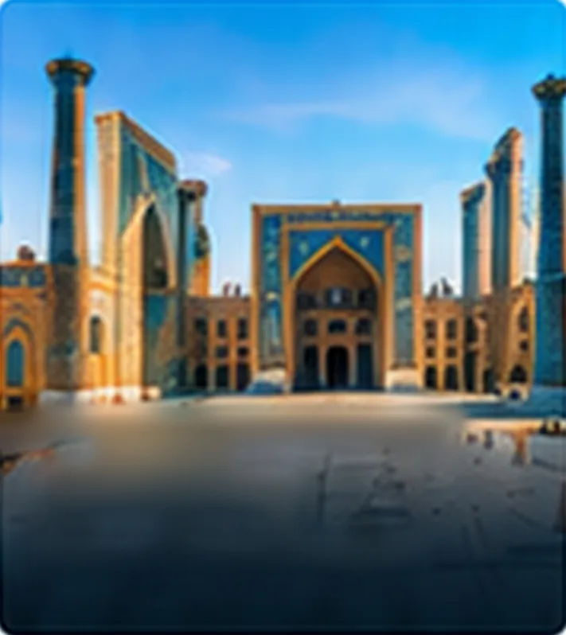

Yo'nalish haqida
Samarqand — Buyuk ipak yo'lining durdonasi va Temur saltanatining poytaxti. Feruza gumbazlar, sirkor peshtoqlar va Registon maydoni tajribali sayyohlarni ham hayratga soladi.
Nimalarni ko'rish mumkin
-
01
Registon maydoni
Uch madrasadan iborat ansambl — O'zbekistonning asosiy ramzi.
-
02
Go'ri Amir maqbarasi
Ichki bezaklari zarhal bilan bezatilgan Temur maqbarasi.
-
03
Shohi Zinda majmuasi
Betakror koshinkor bezaklarga ega maqbaralar ko'chasi.
-
04
Bibixonim masjidi
O'z davrining eng yirik masjidlaridan biri.
Fotogalereya

Agentlik fotosurati uchun joy
Agentlik fotosurati uchun joy
Agentlik fotosurati uchun joy
Agentlik fotosurati uchun joy
Turistik dasturlar
Dasturlar sizning sanalaringiz, guruh tarkibi va qiziqishlaringizga qarab tuziladi: bir kunlik ekskursiyalar, bir necha kunlik turlar yoki bir nechta shaharni qamrab oluvchi marshrutlar.
Sayohat rejalashtiryapsizmi: Samarqand?
Rejalaringiz haqida yozing — dastur tayyorlab, narxini hisoblab beramiz.